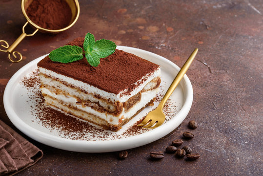
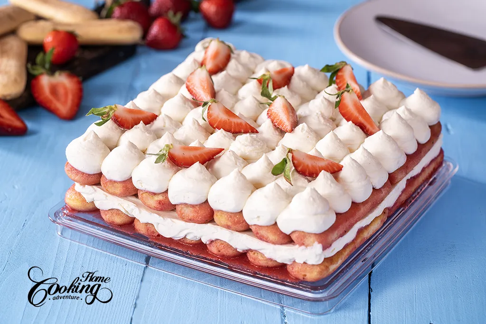
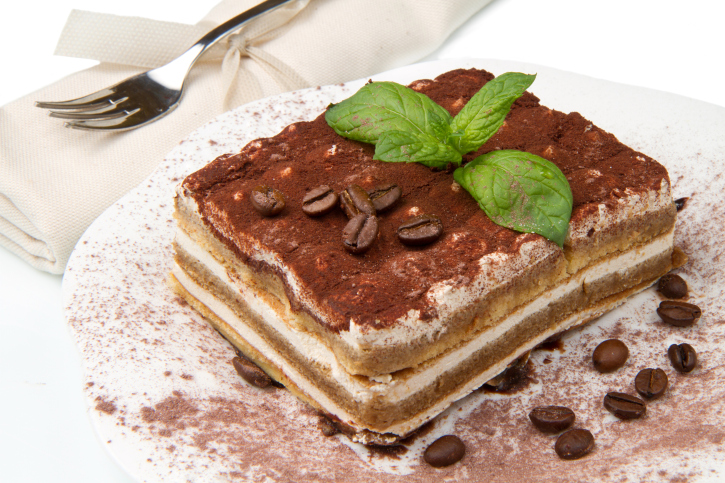
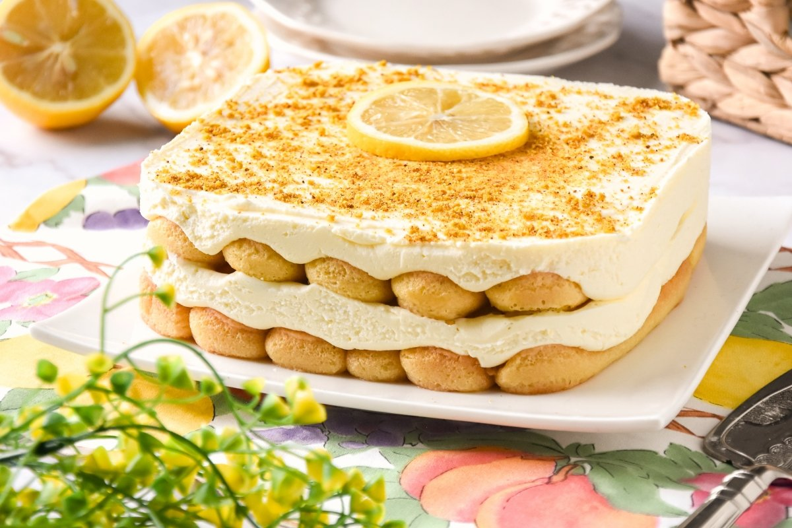

El tiramisú es el postre italiano más famoso que tenemos en el país vecino. Es una de receta fácil y rápida que podemos hacer en menos de 1 hora. Esta receta de postre tan famoso es poco dulzona, así que si no eres un amante del dulce te vendrá genial el toque amargo del café.
Ver receta
| Ingrediente | Cantidad | Notas |
|---|---|---|
| Queso mascarpone | 250 g | Debe estar frío |
| Huevos M | 2 unidades | Separar claras y yemas |
| Azúcar | 50 g | El de toda la vida |
| Bizcochos de soletilla | ±30 bizcochos | No empaparlos demasiado |
| Café fuerte | 1 taza | Enfriado antes de usar |
| Cacao puro en polvo sin azúcar | Al gusto | Para espolvorear |
| Licor de Amaretto | 30 ml | Opcional |
Para preparar un tiramisú clásico, comenzamos separando las claras y las yemas de los huevos. Montamos las claras a punto de nieve y, en otro bol, mezclamos las yemas con el azúcar hasta obtener una crema suave. Añadimos el queso mascarpone para ablandarlo y lo integramos bien con la mezcla de yemas y azúcar. Después incorporamos las claras montadas con movimientos envolventes para mantener la textura aireada. Aparte, mezclamos el café con un poco de licor amaretto. Mojamos ligeramente los bizcochos de soletilla en esta mezcla y formamos la primera capa en la fuente. Cubrimos con la mitad de la crema de mascarpone. Repetimos el proceso formando una segunda capa de bizcochos remojados y otra capa de crema. Para terminar, espolvoreamos cacao puro por toda la superficie y reservamos el tiramisú en la nevera hasta el momento de servir.
El tiramisú nació en la región del Véneto, en Italia. Su nombre significa “levántame el ánimo”, y no es casualidad: su mezcla de café, cacao y crema lo convierte en un postre irresistible.
Hoy en día existen muchas variantes, pero la receta clásica sigue siendo la favorita de millones de personas. Buena historia Rafa. Tu te la sabes.

Una versión fresca y afrutada ideal para verano.

Más intenso, más cremoso, más irresistible.

Ligero, cítrico y sorprendente.